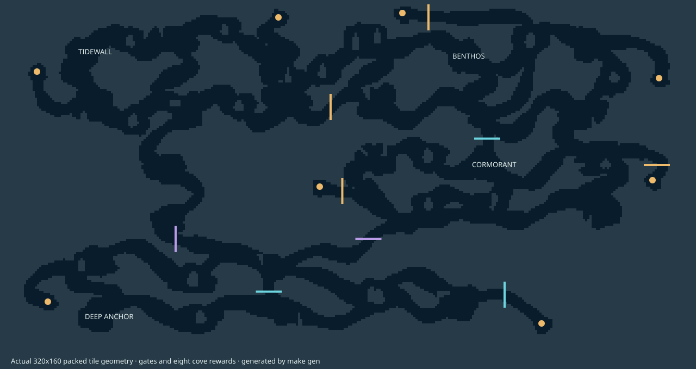

[01] QUICK START
- Select NEW VOYAGE. Left/Right chooses your hull; A confirms.
- At Tidewall: WORK → FIRST → A. Cargo loads automatically.
- Select UNDOCK or press B from the station board.
- Reach Benthos (route map). Enter its docking ring slowly to deliver.
- Read WORK for repair clues. Find the cutter near Tidewall.
All jobs are untimed. Stop at intermediate berths for free air and a save.
[02] CONTROLS / HANDLING
| Screen | Input | Action |
|---|---|---|
| Flight | Left / Right | Thrust. Left is weaker. Release to slow down. |
| Flight | Up | Blow ballast to rise; spends air. |
| Flight | Down | Flood ballast to sink; no extra air cost. |
| Flight | B | Open chart. B closes. Travel and air use pause. |
| Flight | A+B | Press together to pause. |
| Menus | Up / Down | Select row. |
| Menus | A | Confirm / accept. |
| WORK | B | Back to station. |
| Station | B | Undock. |
| Pause / prompt | B | Resume / cancel. |
- Releasing Up/Down holds ballast. Adjust toward the gauge notch for neutral trim; allow time to stop drifting.
- Air drains throughout flight. Cargo reduces acceleration and top speed.
- Fast rock impacts puff debris. Brake before narrow passages.
- HUD: AIR = tank; CGO boxes = load; C/P/T = cutter/seal/thruster.
[03] JOBS / DOCKING
- Freight settlements: Tidewall, Benthos, Cormorant, Deep Anchor.
- Dock automatically by entering the pier’s ring slowly. Air refills free from the fixed 300-unit tank.
- WORK lists only story deliveries and survey leads. There is no shop and no currency.
- One job at a time. A accepts and loads four units; you remain docked.
- Dock at the destination to deliver. Other berths preserve cargo. Deliveries are unpaid restoration work.
- ABANDON needs confirmation. Unfinished story jobs can be accepted again at their source.
- Pump Refuge and Lower Gantry become service berths after repairs: refill, save. No jobs.
[04] EQUIPMENT / MAP
Collect / survey / cut: stay slow and close for ½ second. No action button.
| Find | Use / location clue |
|---|---|
| Cutter * | Opens grates. Western cove near Tidewall; old tender clue. Map |
| Pressure seal * | Opens deep routes. Workshop beyond a cutter grate. Map |
| Thruster | Opens current shortcuts. Optional. Map |
| Survey lens | Collectible; currently no gameplay benefit. |
* Required to finish. Chart reveals during travel; your position and job destination blink. New finds remain unsaved until a successful berth save.
Full map (spoilers)
Open map to zoom
[05] WALKTHROUGH
Show objectives and ending route (spoilers)
- FIRST: accept at Tidewall; deliver filters to Benthos. Map
- PUMP SURVEY: dwell at the survey ring in Pump Refuge. Map
- PUMP: collect impeller at Cormorant; deliver to Benthos. Unlocks Pump Refuge service berth. Map
- LIFT SURVEY: dwell at the survey ring in Freight Yard. Map
- LIFT: collect cable at Benthos; deliver to Cormorant. Unlocks Lower Gantry service berth. Map
- BEACON: finish PUMP + LIFT and obtain pressure seal. Collect core at Cormorant; deliver to Deep Anchor. Map
- HOME: accept dispatch at Deep Anchor; deliver to Tidewall for ending. Map / Thruster shortcut
Pump/lift branches work in either order after FIRST. Surveys can be recorded early. Tools, surveys and repairs remain subject to berth saves.
After ending: continue exploration; Tidewall WORK → VIEW ENDING replays cards.
[05a] ROUTE MAPS
FIRST: Tidewall → Benthos
No equipment. Accept FIRST at Tidewall; deliver at Benthos.
1 Tidewall → 2 Lantern Fork → 3 Upper Shelf → 4 Kelp Cathedral → 5 Benthos
Cutter: Tidewall → abandoned tender
No equipment. Collect cutter at stop 3; return along the same route.
1 Tidewall → 2 Mooring Chimney → 3 Abandoned tender
Surveys: Benthos → Pump Refuge → Freight Yard
No equipment. Dwell at stops 2 and 4. Finish at Cormorant to collect PUMP after FIRST.
1 Benthos → 2 Pump survey → 3 Pipe Junction → 4 Lift survey → 5 Cormorant
PUMP / LIFT: Cormorant ↔ Benthos
PUMP: 1 → 5. LIFT: 5 → 1. Complete each survey first. Stop 4 provides service only after PUMP.
1 Cormorant → 2 Freight Yard → 3 Pipe Junction → 4 Pump Refuge → 5 Benthos
Pressure seal: Cormorant → sealed workshop
Requires cutter. Cut the workshop grate; collect seal at stop 4. Return to Cormorant to save.
1 Cormorant → 2 Broken Ribs → 3 Workshop Approach → 4 Sealed workshop
BEACON: Cormorant → Deep Anchor
Requires pressure seal and both repairs. Accept BEACON at Cormorant; resupply at Lower Gantry.
1 Cormorant → 2 Lower Gantry → 3 Pressure Boundary → 4 Basalt Junction → 5 Trench Refuge → 6 Deep Anchor
HOME: Deep Anchor → Tidewall (no thruster)
Accept HOME at Deep Anchor. Follow numbered berths for resupply; deliver at Tidewall.
1 Deep Anchor → 2 Lower Gantry → 3 Cormorant → 4 Pump Refuge → 5 Benthos → 6 Tidewall
Optional thruster: Benthos → old relay compartment
Requires cutter. Cut the grate near the compartment; return to Benthos to save.
1 Benthos → 2 Old Relay → 3 Old relay compartment
HOME shortcut: Deep Anchor → Tidewall
Requires seal + thruster. Takes the return shaft; no intermediate service berth. Use the main HOME route for resupply.
1 Deep Anchor → 2 Trench Refuge → 3 Basalt Junction → 4 Flooded Lock → 5 Mooring Chimney → 6 Tidewall
[06] SAVING / RECOVERY
- One slot. Saves on new voyage, docking, and job acceptance/abandonment.
- CONTINUE: restores last saved berth, equipment, cargo and chart; full air. No midwater saves.
- RESCUE: A+B → RESCUE → A. Free return to checkpoint; unsaved finds/progress lost.
- SAVE FAILED: RETRY, or CONTINUE UNSAVED. Unsaved progress is not persistent.
- Power: let saving finish. Interrupted writes can lose the slot.
- NEW VOYAGE: confirms before replacing a valid save. Incompatible older saves are not migrated.
[07] FAQ
- Out of air?
- You cannot blow ballast. Use RESCUE if you cannot reach a berth.
- Cannot dock again?
- Leave the ring fully after undocking, then re-enter slowly.
- Story job missing?
- Check source station, prerequisites and WORK clue. Deliver or abandon existing cargo first.
- Can I finish without optional equipment?
- Yes. Only cutter and pressure seal are required.
- Mute music?
- A+B → MUSIC ON/OFF → A. All clues work without sound.
- Enter uploader?
- Hold Down during power-on/reset.